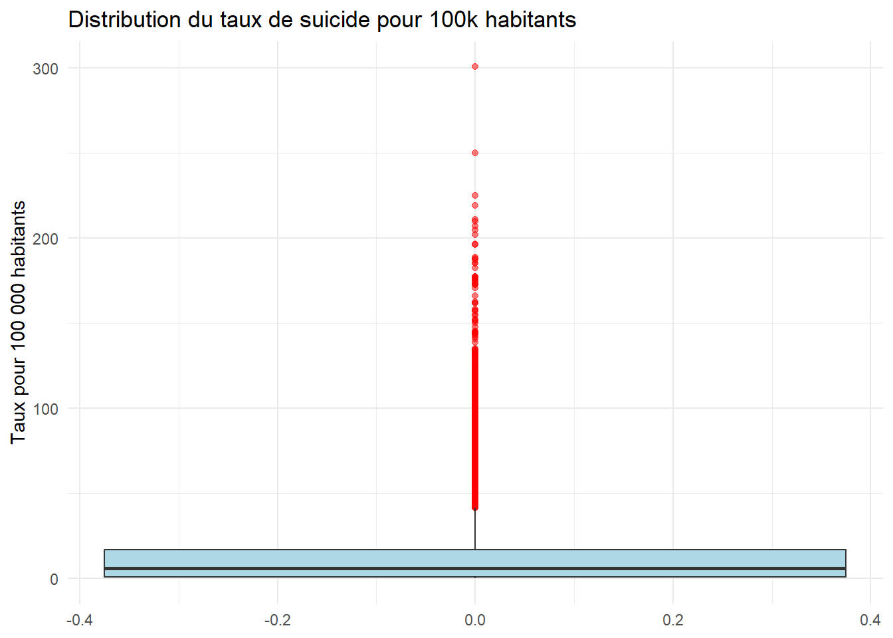

Observations avec suicides_no manquant : 2256 Observations avec population manquante : 5460 Observations avec les DEUX manquantes : 0 Observations avec suicides_no manquant : 2256 Observations avec population manquante : 5460 Observations avec les DEUX manquantes : 0 Données initiales : 43776 lignesDonnées nettoyées : 36060 lignesLignes supprimées : 7716 ( 17.63 %)sex en facteur| Sexe | Fréquence |
|---|---|
| Homme | 18030 |
| Femme | 18030 |
age
| Tranche d’âge | Fréquence |
|---|---|
| 5-14 ans | 6010 |
| 15-24 ans | 6010 |
| 25-34 ans | 6010 |
| 35-54 ans | 6010 |
| 55-74 ans | 6010 |
| 75+ ans | 6010 |
| country | year | sex | age | suicides_no | population | taux_suicide_100k | decennie |
|---|---|---|---|---|---|---|---|
| Albania | 1987 | Femme | 15-24 ans | 14 | 289700 | 4.83 | 1980-1989 |
| Albania | 1987 | Femme | 25-34 ans | 4 | 257200 | 1.56 | 1980-1989 |
| Albania | 1987 | Femme | 35-54 ans | 6 | 278800 | 2.15 | 1980-1989 |
| Albania | 1987 | Femme | 5-14 ans | 0 | 311000 | 0.00 | 1980-1989 |
| Albania | 1987 | Femme | 55-74 ans | 0 | 144600 | 0.00 | 1980-1989 |
| Albania | 1987 | Femme | 75+ ans | 1 | 35600 | 2.81 | 1980-1989 |
| Albania | 1987 | Homme | 15-24 ans | 21 | 312900 | 6.71 | 1980-1989 |
| Albania | 1987 | Homme | 25-34 ans | 9 | 274300 | 3.28 | 1980-1989 |
| Albania | 1987 | Homme | 35-54 ans | 16 | 308000 | 5.19 | 1980-1989 |
| Albania | 1987 | Homme | 5-14 ans | 0 | 338200 | 0.00 | 1980-1989 |
Seuil inférieur : -23.56 Seuil supérieur : 41.35 Nombre d'outliers : 2704 ( 7.5 %)
| country | year | sex | age | suicides_no | population | taux_suicide_100k |
|---|---|---|---|---|---|---|
| San Marino | 1997 | Homme | 75+ ans | 2 | 665 | 300.75 |
| French Guiana | 1979 | Homme | 75+ ans | 1 | 400 | 250.00 |
| Aruba | 1995 | Homme | 75+ ans | 2 | 889 | 224.97 |
| Hungary | 1981 | Homme | 75+ ans | 390 | 177900 | 219.22 |
| Hungary | 1979 | Homme | 75+ ans | 364 | 172400 | 211.14 |
| Hungary | 1982 | Homme | 75+ ans | 378 | 180300 | 209.65 |
| Hungary | 1985 | Homme | 75+ ans | 393 | 189700 | 207.17 |
| Seychelles | 2006 | Homme | 75+ ans | 2 | 976 | 204.92 |
| Hungary | 1980 | Homme | 75+ ans | 357 | 176600 | 202.15 |
| Hungary | 1990 | Homme | 75+ ans | 386 | 196496 | 196.44 |
Valeurs manquantes après nettoyage : country year sex age
0 0 0 0
suicides_no population taux_suicide_100k decennie
0 0 0 648
=== RÉSUMÉ DU DATASET NETTOYÉ ===Nombre d'observations : 36060 Nombre de variables : 8 Pays uniques : 118 Années couvertes : 1979 - 2016 Données nettoyées exportées avec succès !Transformations effectuées :
sex et age en facteurs ordonnésDataset final prêt pour l’analyse !